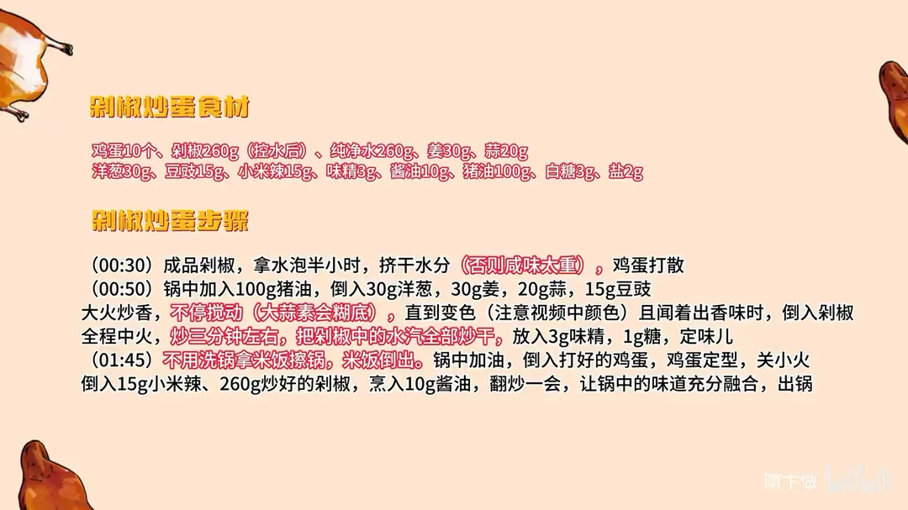

剁椒炒鸡蛋
隋卞一做。260g 成品剁椒先泡水半小时、挤干，不然咸味压不住。100g 猪油大火炒香 30g 洋葱、30g 姜、20g 蒜、15g 豆豉，中火把剁椒水汽炒干定味，再炒鸡蛋，回锅剁椒烹 10g 酱油翻匀。
原视频：https://www.bilibili.com/video/BV13PmdYvEXE
食材
鸡蛋、剁椒、纯净水 等 13 样
| 类别 | 用料 | 用量 |
|---|---|---|
| 主料 | 鸡蛋 | 10 个 |
| 主料 | 剁椒 | 260g（控水后） |
| 泡剁椒 | 纯净水 | 260g |
| 炒料 | 姜 | 30g |
| 炒料 | 蒜 | 20g |
| 炒料 | 洋葱 | 30g |
| 炒料 | 豆豉 | 15g |
| 炒料 | 小米辣 | 15g |
| 调料 | 味精 | 3g |
| 调料 | 酱油 | 10g |
| 调料 | 猪油 | 100g |
| 调料 | 白糖 | 3g |
| 调料 | 盐 | 2g |
步骤
- 处理剁椒：成品剁椒用水泡半小时，挤干水分，否则咸味太重；鸡蛋 10 个打散备用。
- 炒香料：锅中加入 100g 猪油，倒入 30g 洋葱、30g 姜、20g 蒜、15g 豆豉，大火炒香，要不停搅动，大蒜素容易糊底，炒到变色并闻到香味。
- 炒剁椒：倒入 260g 剁椒，全程中火炒 3 分钟左右，把剁椒里的水汽全部炒干，放入 3g 味精、1g 糖定味。
- 擦锅：不洗锅，用米饭把锅擦一遍再倒出米饭，去掉残留的辛辣和水分。
- 炒蛋：锅中重新加油，倒入打散的鸡蛋，鸡蛋定型后关小火。
- 合炒出锅：倒入 15g 小米辣和 260g 炒好的剁椒，烹入 10g 酱油，翻炒一会儿让味道充分融合，即可出锅。
小贴士
- 剁椒一定要泡水挤干，成品剁椒咸度高，不泡会盖掉鸡蛋的香味。
- 炒姜蒜豆豉时不停搅动，油多、火大，稍停就会糊底发苦。
讲解要点
难度：★★☆☆☆（不难，难在剁椒的咸度和炒料时的火候）
为什么这么做
- 剁椒先泡半小时再挤干：成品剁椒盐分高，不泡就只能少放，放少了又没剁椒味；泡过再挤，才能放足量还不出咸。
- 必须用猪油：猪油润，能把剁椒的香挂住，成品油亮不干、不燥也不腻口，植物油炒出来发涩。
- 洋葱、姜、蒜、豆豉先大火炒香：这是剁椒的复合底味；蒜受热出大蒜素会黏锅，所以要不停搅动，看到变色、闻到香味再下剁椒。
- 剁椒全程中火炒 3 分钟：目的是把水汽炒干、把味定住，水汽不干味就散，也不耐放。
- 3g 味精、1g 糖：糖不是为了甜，是柔和辣度和咸度，让辣不燥。
- 用米饭擦锅：不洗锅，用米饭把残留的辛辣和水分擦掉，再炒蛋不发黑不发苦；擦过的那团米饭本身也香。
- 鸡蛋定型就转小火，最后才回剁椒、烹酱油：蛋嫩不老，酱油烹进去让剁椒味和蛋融合。
容易翻车
- 剁椒不泡直接下锅，齁咸，只能靠少放，结果没味。
- 炒姜蒜豆豉火太大又不搅动，大蒜素粘底，一下就糊、发苦。
- 鸡蛋炒到全熟才回锅，再一炒就老，口感发柴。
- 省掉擦锅这步，锅里的辛辣和杂质会把蛋染黑、带苦味。
热评补充
- 有人拿「猪油不健康」开玩笑：这道菜的润和香主要就来自猪油，成品吃着并不腻口。
原片尾卡

原片文案
AI 字幕校准稿
今天这个菜是给小李拍的。小李天天吃我们门口那家的剁椒鸡蛋盖饭，我那天尝了一下，也觉得他这品味真不怎么样。今天哥给你做一个剁椒炒鸡蛋。别的我没啥要求，你能不能多给我放点鸡蛋——他天天给我放的鸡蛋可少了。今天哥给你准备了十个鸡蛋，可劲吃。
你们大概率买的是这种成品的剁椒，盐味会有点重，提前拿水泡一泡，去一下盐味，怎么着也得泡半小时，然后给它挤一下再炒。这就是第一步。这一步什么目的呢？剁椒放少了它没有剁椒味，放多了又齁咸，所以咱们给它处理一下。
基本上没什么切的活，咱们就上锅。第二步，剁椒得先炒，而且得用猪油，用猪油炒出来的剁椒吃着才润。好多人不是说吃猪油不健康吗。洋葱、姜、蒜、豆豉全都放进去，大火炒香；这时候你得不停地搅动，防止它糊底——蒜一受热会出大蒜素，黏黏糊糊的，会粘底。看都这种变色、闻着出香味了，就可以把剁椒放进去了。
全程中火，怎么也得炒个 3 分钟，把剁椒里边的水汽全部炒出去。然后里边放点味精、一克糖，糖是柔和辣度和咸度的。咱们尝一下，可以了，出锅。
锅上不用洗，直接炒就行？那可不行，洗了就亏了，我拿这米饭擦一下锅。然后把鸡蛋打散，加油，把鸡蛋倒进去，鸡蛋定型，关小火，把刚才留的小米辣放进去，再把炒好的剁椒倒进去，少烹一点酱油，让剁椒的味跟鸡蛋充分融合，这时候可以关火了。
我刚才吃剁椒的时候就能吃得出来，这个剁椒炒得非常香。咱们放那么多辅料，辅料的香味也都跟这个剁椒融合了，你吃不出来这么多种很融合的味道，反而衬托出来这个剁椒的香是很综合的，一点都不燥，又柔又厚。而且猪油让这个剁椒变得更润，不腻口。
这个猪油全被豆豉吸进去了，而且豆豉也炒得好香。这个菜太下饭了，唯一大家需要注意的就是，做这个菜家里的米饭一定要多备。非常强烈推荐大家试一下。